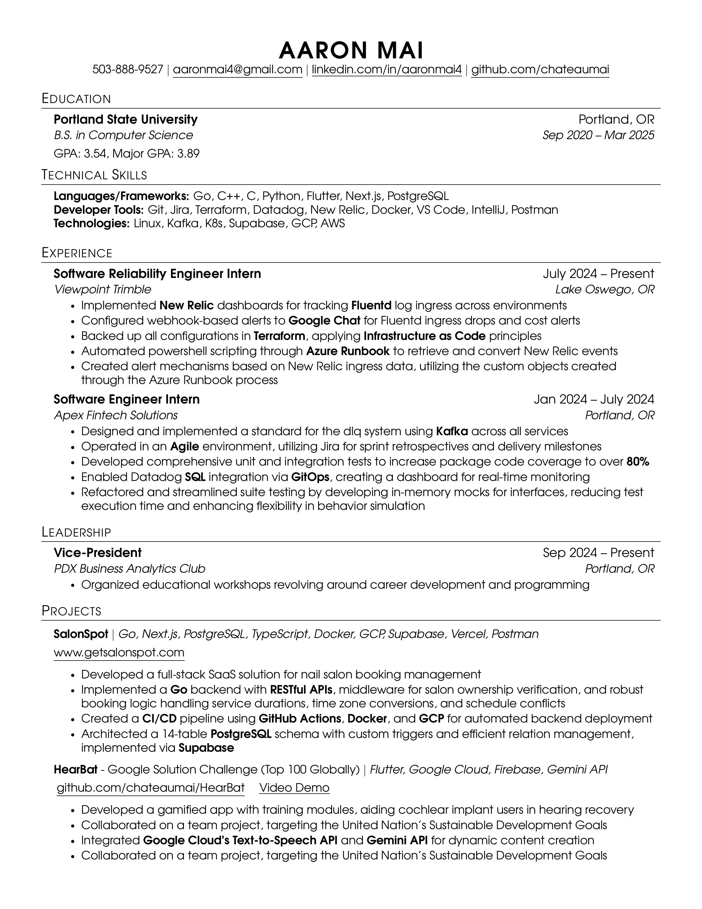
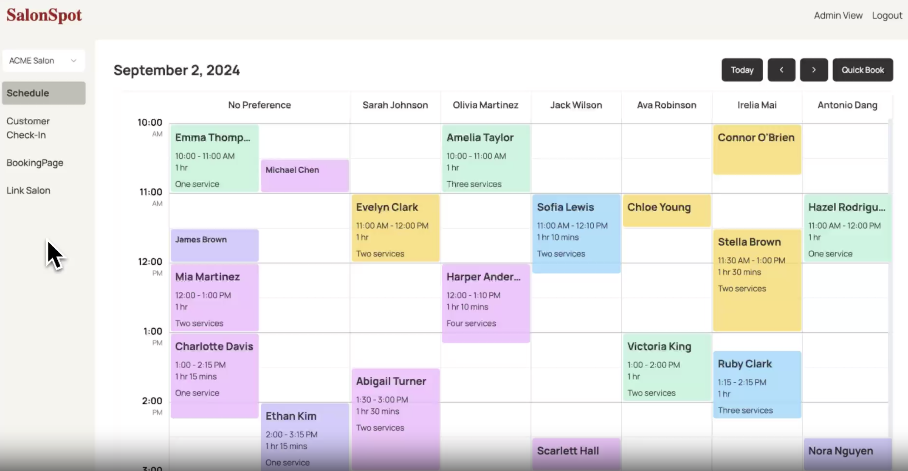
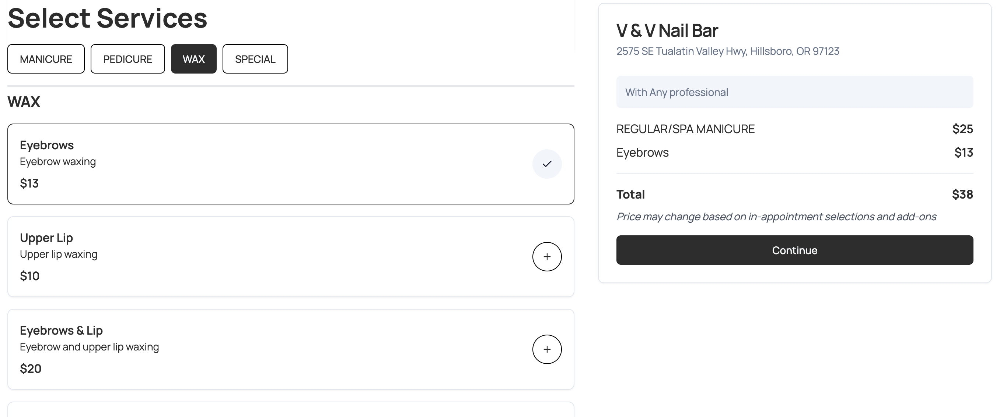
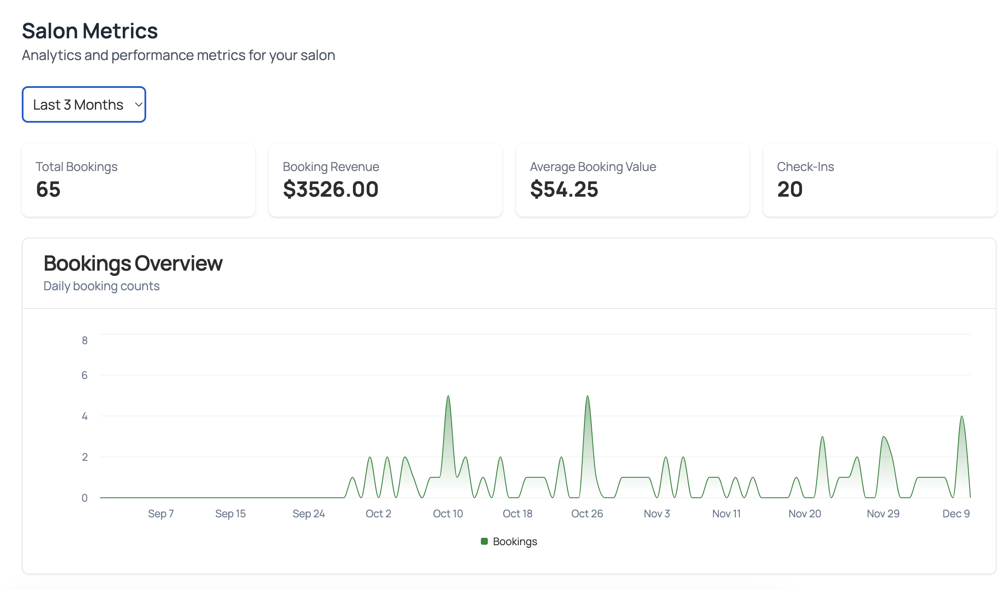

My name is Aaron Mai and I am finishing up my last year at PSU. I have
lived in Oregon all my life and this is my portfolio website for CS
463 - Intro to Web Development.
Work Experience
Software Reliability Intern - Trimble
At Trimble I am on the construction management software platform
team! I am learning a lot about observability, cloud infra, and
infrastructure as code through Terraform. They are on Azure so I am
thankful to be exposed to that cloud provider, as it seems pretty
popular. One thing I've noticed / learned from my team is they are
really careful with access controls. People / entities are given the
minimum of access required to function, so that if it were to be
compromised, it minimizes the potential harm.
Software Engineer Intern - Apex Fintech Solutions
When I was working on the ACATS team which dealt with creating the
system to facilitate account transfers. So for example if you
changed 401k providers, you would initiate an ACATS to trasnfer the
securities and cash from your previous account to your new account.
This way you won't execute a liquidation event that you will need to
pay taxes on. This was my first introduction to how a software
engineering team operates, as well as a tech stack in general. They
are on GCP and I was primarily working with Golang.
Full Resume

Projects
SalonSpot
SalonSpot is a vertical SaaS for the nail salon industry. I create
websites for nail salon owners, and enable them to take online
bookings through my custom software. I have email & SMS notifications
implemented for notifying owners when someone books, and to remind
customers of their appointment. Owners also have access to view
their business related metrics like online booking revenue and
in-store checkins through the dashboard.



SalonSpot Dashboard and Booking Interfacegetsalonspot.com
HearBat
HearBat was me and my team's submission to the 2024 Google Developer
Student Club Solution Challenge. My friend and I coded this
together, and my girlfriend designed the UI. The app is geared
towards people with cochlear implants in order to aid in their
hearing journey. When you get an implant, you must retrain your
hearing, so this app is kind of like Duolingo but for hearing words
instead of languages. I coded most of the UI as well as the main
gameplay logic of the Duolingo esque modules.